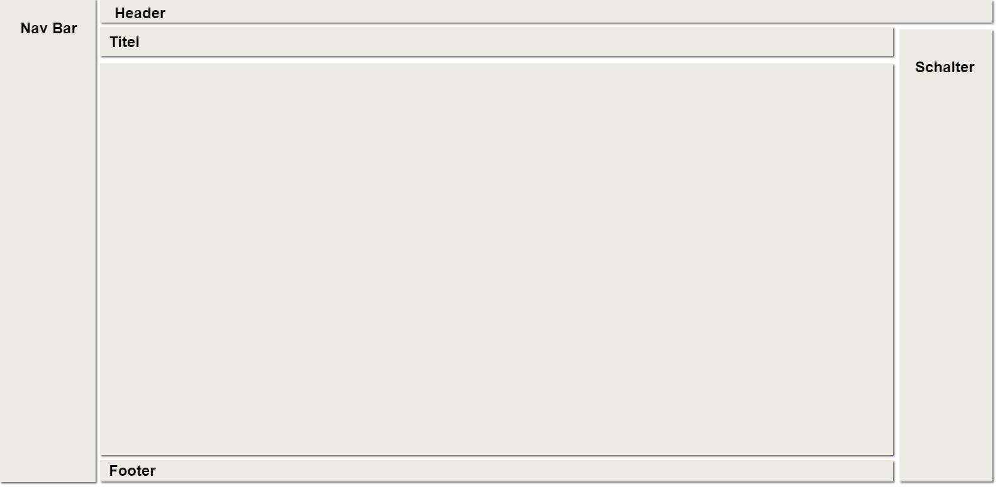
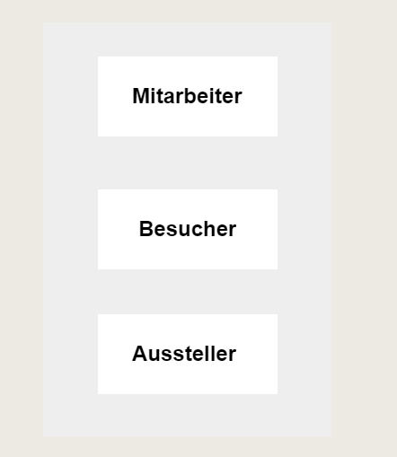
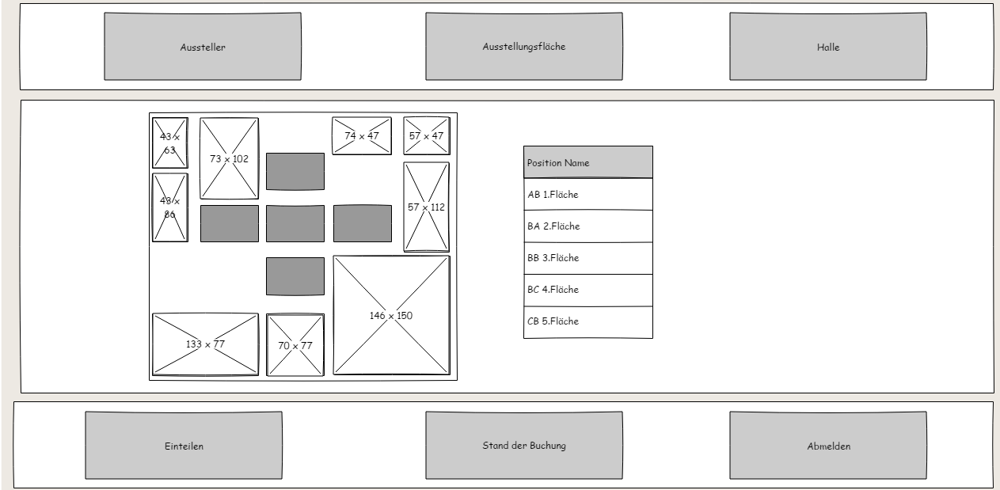
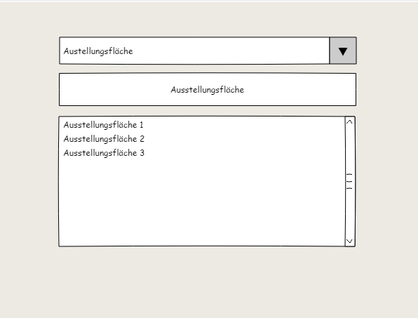
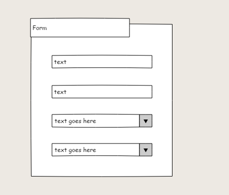
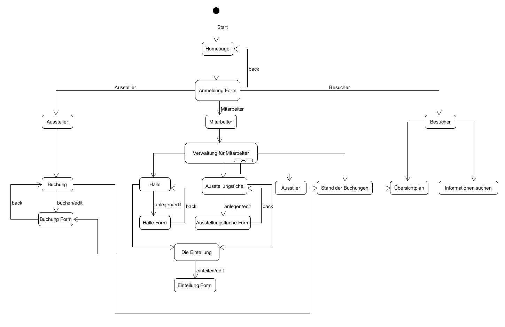
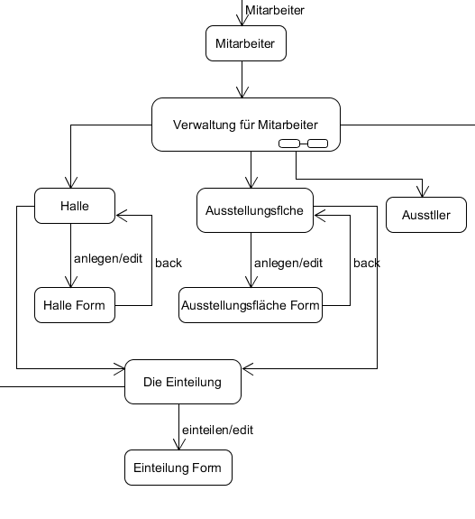
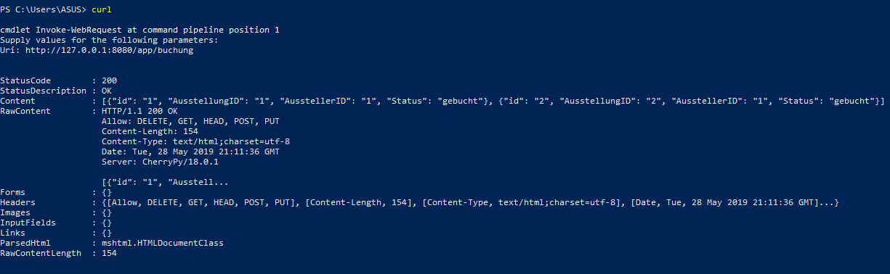
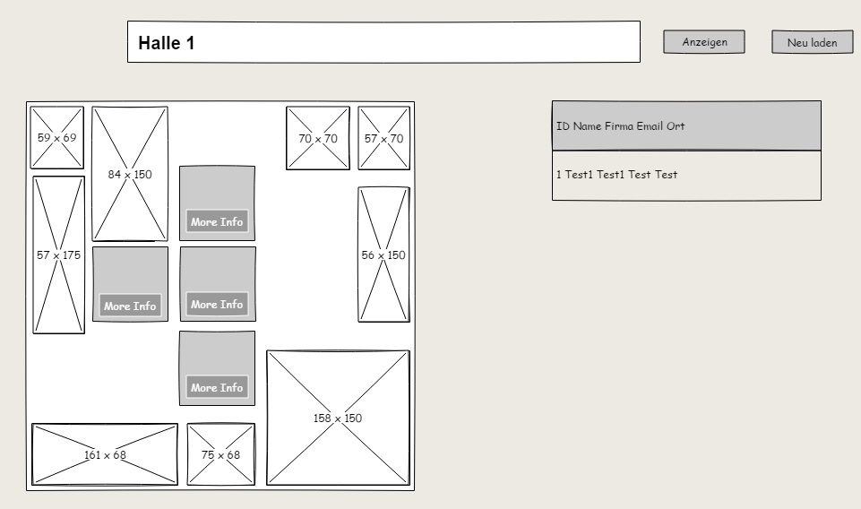
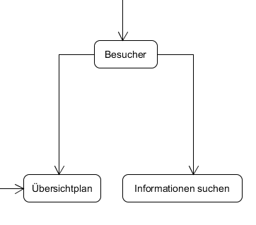

In diesem Prakitkum muss man eine Webapplikation, in der man für die Veranstaltung plannen und organiesieren. Durch diese Applikation kann der Mitarbeiter durch ein Raster die Veranstalltungsfläche in jeder Halle einteilen. Und dann kann der Aussteller die Ausstellungsfläche buchen oder stonieren, wenn die Fläche schon vorher gebucht wurde. Die Besucher kann zuerst die Halle auswählen, und dann kann er wissen, wer eine Ausstellungsfläche gebucht hat. Außerdem kann er weitere Informationen zu dem Aussteller erhalten oder die Information zu Halle, Ausstellungsfläche usw suchen.
Allgemeine Informationen
Das ist eine Single-Page Applikation (SPA)
Frontend:
Javascript, fetchAPI zum asynchronen Datenverkehr zwichen Client und Server
HTML
CSS (besonders CSS-Grid für Layout und für Halle-Layout)
Backend:
Python
Cherrypy framework zur Implementierung des Webservers mit REST-Interface
Hilfsmittel:
cherrypy zur Implementierung des Webservers mit REST-Interface
te/tm zur clientseitigen Verwendung von templates
es zur clientseitigen Verwendung des Publish-Subscreiber-Musters
fetch-API zum ansychronen Datenverkehr zwischen Client und Server
Nutzungsszenario “Messerveranstalter”
Allgemeine Beschreibung
Als Messerveranstalter kann man hauptsächlich die Veranstaltung plannen und organiesieren. Nach der Anmeldung kommt man zur ein Dashboard, im dem man arbeiten kann
Zuerst kann man Halle und Ausstellungsfläche anlegen/löschen/ändern. Und dann kann man durch ein Form und ein Raster die Ausstellungsfläche in jeder Halle einteilen.
Besonders kann der Messerveranstalter den Stand der Buchung prüfen.
Benutzgruppe “Messerveranstalter”: Beschreibung Persona
Halle anlegen/löschen/ändern
Ausstellungsfläche anlegen/löschen/ändern
Ausstellungsfläche einteilen
Interaktionsdesign
Übersicht Interaktion
LayoutStartseite
Anmeldung Form
Mitarbeiter Seite
Weitere Informationen suchen
FormList
Interaktion 1
Zustandsdiagramm(e) und Wireframe(s) nach Bedarf
UML
UML_mitarbeiter
Erläuterung
Nach der Anmeldung kann der Mitarbeiter jetzt arbeiten. Er kann Halle oder Ausstellungsfläche anlegen oder ändern. Vor der Einteilung gibt es Übersichtplan, damit man einfacher einteilen. Und dann durch ein Klick auf “Einteilung” Schalter kann er mithilfe eines Forms die Ausstellungsfläche in jeder Halle mit einer bestimmter Position einteilen. Es gibt ingesamt 5 Potisionen. Jede Ausstellungsfläche kann nur in eine bestimmte Halle verteilt werden. Außerdem kann man auf die “Stand der Buchung” klicken, dadurch kann man den Stand aller Buchungen prüfen und sehen.
Erläuterung Daten nach Bedarf
Daten der Halle (id, Name)
Daten der Ausstellungsfläche (id, Name)
Daten der Halleeinteilung (id, Halle_id, Ausstellungsfläche_id, Position, Status)
Daten für Stand der Buchung (id, Ausstellungsfläche_id, Aussteller_id, Status)
Nach der Anmeldung kann der Aussteller durch einem Form die Ausstellungsfläche buchen. Durch das Raster kann der Aussteller wissen, an welcher Position die Ausstellungsfläche liegt. Außerdem gibt es die Liste aller gebuchte Ausstellungsfläche.
Der Aussteller kann auch duch einem Form die Buchung stornieren.
Nach der Anmeldung kann der Aussteller jetzt die Aussellungsfläche buchen. Vor der Buchung kann man den Stand der Buchung prüfen, indem man auf dem “Einteilen” Schalter klickt. Man kann auch die gebuchten Ausstellungsflächen stornieren.
Erläuterung Daten nach Bedarf
Daten des Ausstellers (id, Name, Firma, Email, Ort)
Daten der Buchung (id, Aussteller_id, Ausstellungsfläche_id, Status)
Test
curl-Test
curl_Test_buchung
Nutzungszenario “Besucher”
Allgemeine Beschreibung
Nach der Anmeldung kann der Besucher die Informationen suchen. Zum beispiel um die Information zu Ausstellungsfläche zu suchen kann er einfach die Halle auswählen und dann wählt man durch den Button die Ausstellungsfläche aus, um zu wissen, welchem Aussteller die Ausstellungsfläche gehört.
Außerdem kann der Besucher weitere Informationen zu Hallen, Ausstellungsflächen, Ausstellern,. usw suchen
Benutzgruppe “Besucher”: Beschreibung Persona
den Übersichtplan für jede Halle abrufen und weitere Informationen zu Ausstellern abrufen
weitere Informationen zu Hallen, Ausstellungsflächen, Aussteller, usw abrufen
Interaktionsdesign
Übersicht Interaktion
LayoutStartseiteAnmeldung FormBescher Seite
Halle 1 suchenHalle 2 suchenWeitere Informationen suchenFormList
Interaktion 1
Zustandsdiagramm(e) und Wireframe(s) nach Bedarf
UML
UML_besucher
Erläuterung
Nach der Anmeldung kann der Busucher jetz die Informationen zu Halle und Ausstellern. Für die Suche muss man zuerst die Halle auswählen. Und dann entstehen alle Ausstellungsflächen der ausgewählte Halle mit roter Farbe. In jeder Ausstellungsfläche kann man auch Informationen zu dem Aussteller, der die Ausstellungsfläche gebucht hat. Um das zu machen klickt man auf dem “More Info” Schalter. Alle Informationen von dem Aussteller werdem in der Tablle neben dem Übersichtplan entstehen. Wenn man die andere Halle auswählen möchte, muss man zuerst auf dem “Aktualisieren” Schalter klicken und dann kann man andere Halle auswählen.
Außerdem kann man schnell die Informationen suchen, wenn man “Search auswählen”. Zuerst muss man dem Typ der Informationen auswählen (zum Beispiel Halle, Ausstellungsfläche, usw), dann kann man die Informationen suchen
Erläuterung Daten nach Bedarf
Daten des Ausstellers (id, Name, Firma, Email, Ort)